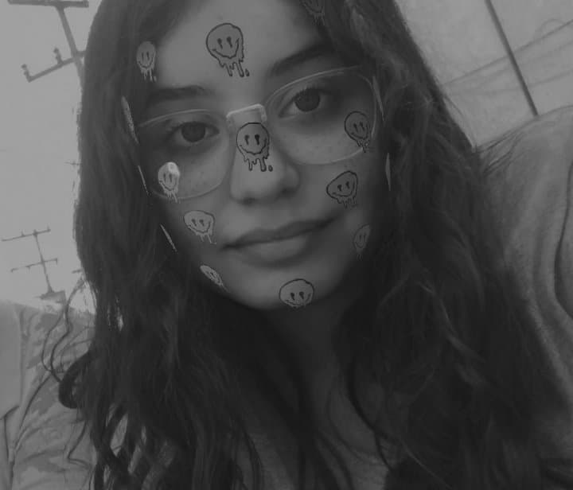

Mi nombre es Mia Constanza , me gusta que me digan de las dos formas aunque regularmente me dicen Mia porque es más fácil de aprender jsjs, como dato curioso, todos piensan que Constanza es mi apellido. Tengo 16 años, cumplo 17 el 24 de Junio ,me gusta mucho dormir, dibujar, escuchar música y jugar roblox :3
Soy team Horchata y team frío porque toda la gente exitosa lo es JAJA. Aunque entre horchata y jamaica prefiero el agua de limón. Mi casa son los poderosísimos TeporinGODS, hasta aquí mi reporte Joaquín.



Dibujar, pintar, programar cosas random, hablar con mis amigos, dormir y escuchar música.
Psicología de color
Programación orientada a objetos
Propiedades de css
Selectores
Ciclos en php
Cookies
Diseño
HTML
Js
Seguridad
Php
git
Seguridad